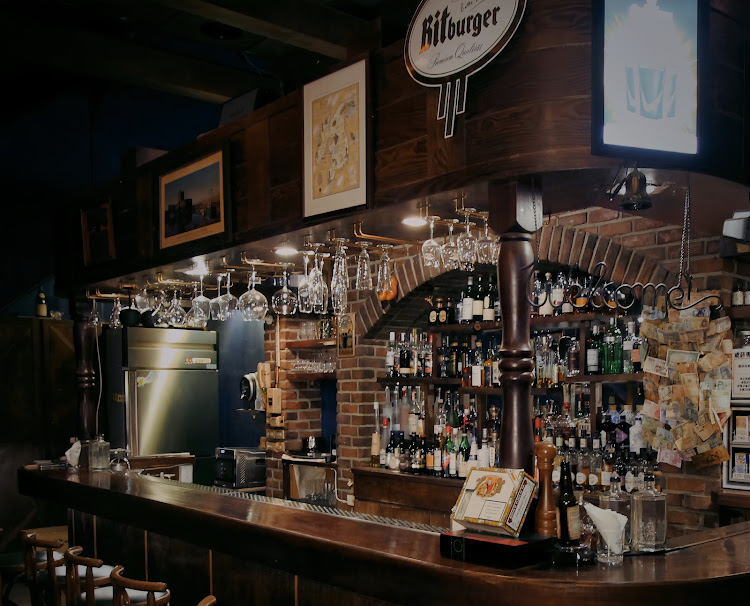

酒類知識
Highball 是什麼？新手也看得懂的 Highball 入門
發布
Highball 是什麼？認識威士忌、蘇打水與冰的組合，了解氣泡、甜度與酒感的差別，整理點 Highball 前應詢問的基酒、價格與供應方式。
閱讀文章EASY JOURNAL
從第一次點酒、Highball 與威士忌入門，到西屯約會、朋友聚會和交通。
依發布日期由新到舊，找到今晚需要的指南。

酒類知識
發布
Highball 是什麼？認識威士忌、蘇打水與冰的組合，了解氣泡、甜度與酒感的差別，整理點 Highball 前應詢問的基酒、價格與供應方式。
閱讀文章
酒類知識
發布
經典調酒介紹：從 Old Fashioned、Paloma 到 Espresso Martini，按酸甜、苦味、氣泡與咖啡方向比較，認識酒名並學會向調酒師詢問。
閱讀文章
約會與聚會
發布
選台中朋友聚會酒吧，先確認人數、同桌座位、音量、餐點與各自預算。附多人訂位訊息和分帳、晚到、無酒精選擇的行前清單。
閱讀文章
夜晚行前指南
發布
找台中深夜酒吧前，先確認跨日營業、最後點餐、當晚空位與安全返程。用日期範例理解營業到翌日的意思，再安排西屯晚間行程。
閱讀文章交通與行前指南
發布
找統聯轉運站附近酒吧，先確認車票上的站名與地址。整理中港轉運站資訊、永福路到店導航、跨日車票與返程清單，不預設步行距離或末班車。
閱讀文章西屯小酌
發布 · 更新
選西屯酒吧，先比較聊天或聽歌需求、酒單、餐點、預算與回程。整理約會、朋友聚會和第一次小酌的行前清單，再安排永福路的夜晚。
閱讀文章約會與聚會
發布 · 更新
台中約會酒吧怎麼選？從第一次約會的聊天需求，到紀念日的座位、餐點與訂位確認，整理兩人預算、無酒精選擇及返程安排。
閱讀文章新手入門
發布 · 更新
第一次去酒吧怎麼點酒？用風味、酒感、預算與飲食限制說明需求，學會看酒單、詢問低消、基本酒吧禮儀及不喝酒時的選擇。
閱讀文章風味指南
發布 · 更新
調酒新手推薦怎麼看？用酸甜、苦味、氣泡與酒感四個方向讀酒單，搭配茶香、果香和煙燻的點酒例句，找到自己想詢問的台中調酒。
閱讀文章威士忌入門
發布 · 更新
威士忌新手怎麼喝？比較純飲、加冰、加水與 Highball 的差異，學會描述香氣、看單杯與單瓶標示，整理到台中威士忌酒吧前的詢問清單。
閱讀文章SEE YOU AT EASY
告訴我們日期、時間與人數，剩下的慢慢聊。